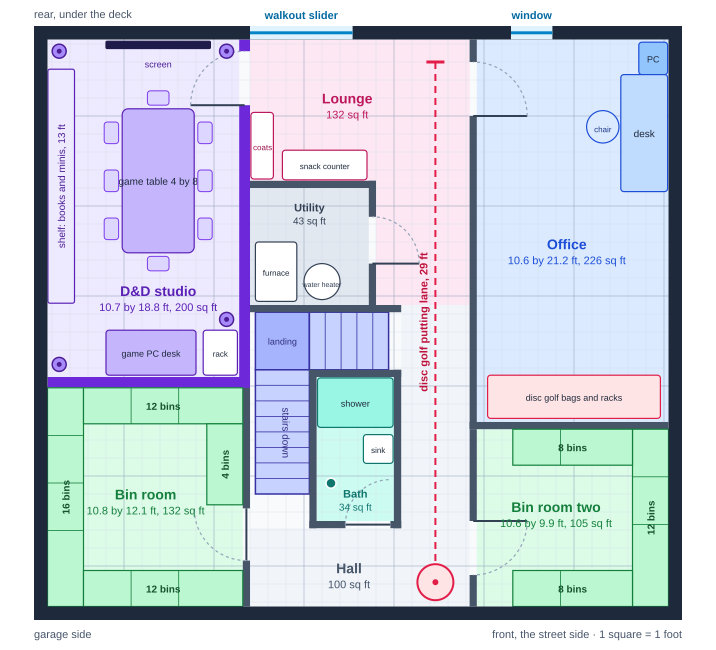
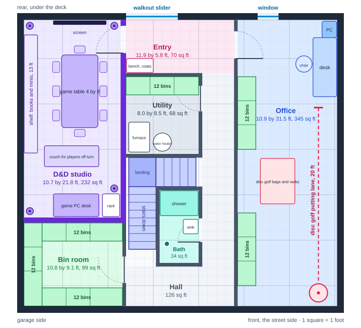
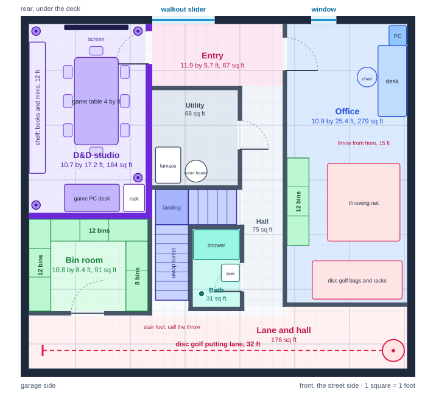

The house plan · The house report
Basement layouts, 1 square to the foot
Basement layouts for 45 Autumn Crest Ct
The basement is a plain rectangle, 36 by 33 feet outside its 9-inch poured walls, which leaves a floor of about 34 by 31. Nick picked Layout A. The other two stay below for comparison.
A few things hold still in every layout. The stair keeps its place, and the bath rough-in waits at its foot. The walkout slider and the one window sit in the rear wall. The furnace and the water heater most likely stand just north of the stair landing, for the reasons below, so every layout now gives them a room there. The inspection confirms the spot; if it moves, the utility room moves with it.
Where the furnace is
No photo of this basement exists, so three other sources place it.
- The furnace flue. A metal flue cap leaves the roof at the ridge, about 15 feet in from the garage-side wall, in the rear listing photo. The twin next door, the same plan built the other way round, shows its flue in the mirror spot. A flue climbs nearly straight up from the furnace, and this one lands over the north side of the stair.
- The twin's basement. Its 2024 listing photographed its unfinished basement. Its furnace stands beside the main beam, with a steel post a few feet along it. The duct trunks run along the beam, and the water heater shares the flue. In a house 33 feet deep, that beam runs the long way at about the middle, which here is the north edge of the stair.
- The air conditioner. One outdoor unit sits at the rear corner on the garage side, so its lines come in near there and run to the furnace.
All three point the same way, which puts the furnace and the water heater just north of the landing, about 12 to 17 feet in from the garage-side wall, close enough to the stair that a utility room there costs the studio nothing. The electrical panel sits on whichever outside wall faces the electric meter. The twin's sits on a poured wall, and the meter here has not been seen yet. The beam crosses the basement about 16 feet from the rear wall, under the stair's north edge. Its posts may land inside the studio. The drop ceiling steps around them.
What the stair decides
The stair comes down from a door under the loft stair, turns at a landing about five feet off the floor, then lands facing the front wall. The landing and the upper run hang in the middle of the room. With the studio left of the slider, the only full-height path to the stair's foot runs down the right side. A hall aimed straight at the stairs dead-ends against that landing. Every layout here runs its hallway down that right side and puts the hallway to work.
Layout A: the lounge and the center lane

| Room | Size | Square feet | What it holds |
|---|---|---|---|
| D&D studio | 10.7 by 18.8 feet | 200 | The 4-by-8 table with eight seats, a 12-foot shelf of books and minis on the garage-side wall, the game PC desk at the far end, the screen on the rear wall, speakers and lights in the corners. No window. |
| Utility | 6.6 by 6.5 feet | 43 | The furnace and the water heater, behind a door off the lane. |
| Lounge | L-shaped | 132 | Open to the slider: coats, a snack counter, and the tee for the putting lane. |
| Office | 10.6 by 21.2 feet | 226 | The computer tower in the corner where the rear and far walls meet, the desk along the far wall, the window behind and to the left. Disc golf bags and racks run along the back. |
| Bath | 4.3 by 8.0 feet | 34 | Shower, a toilet on the rough-in, a sink. |
| Bin room | 10.8 by 12.1 feet | 132 | Shelves on all four walls. |
| Bin room two | 10.6 by 9.9 feet | 105 | Shelves on three walls. |
| Hall | L-shaped | 100 | The center lane and the stair's foot. |
Bins: 72 on four tiers, 90 on five. Putting lane: 29 feet, tee in the lounge, basket at the front wall.
Players come in through the slider, hang their coats, grab a drink and walk ten feet into the studio. The two doors face each other across the lounge, 12 feet apart. Nick crosses between them in a few steps, and the lounge keeps the table's noise off the office. The lane doubles as the hall, so it costs no floor. The utility room backs onto the studio, which is why that side gets the full sound treatment.
Layout B: the office comes first

| Room | Size | Square feet | What it holds |
|---|---|---|---|
| D&D studio | 10.7 by 21.8 feet | 232 | The table, the shelf, the game PC desk, and a couch for players sitting out a turn. |
| Entry | 11.9 by 5.8 feet | 70 | A bench and coat hooks inside the slider. |
| Utility | 8.0 by 8.5 feet | 68 | The furnace and the water heater, plus one shelf run. |
| Office | 10.9 by 31.5 feet | 345 | The full depth of the far wall: the corner desk, disc golf bags and racks, two shelf runs, and the putting lane past the desk. |
| Bath | 4.3 by 8.0 feet | 34 | Shower, toilet, sink. |
| Bin room | 10.8 by 9.1 feet | 99 | Shelves on three walls. |
| Hall | L-shaped | 126 | From the entry down to the stair's foot. |
Bins: 72 on four tiers, 90 on five. Putting lane: 20 feet, inside the office.
Here the office runs the full depth of the far wall, 31 feet from the window to the front, which makes it the biggest room in the basement and puts the disc golf inside it, where Nick first pictured it. The studio gains three feet for a couch. The lane comes up short, because the desk takes the corner where it would start.
Layout C: the 10-meter lane

| Room | Size | Square feet | What it holds |
|---|---|---|---|
| D&D studio | 10.7 by 17.2 feet | 184 | The table, the shelf, the game PC desk. |
| Entry | 11.9 by 5.7 feet | 67 | Inside the slider. |
| Utility | 7.8 by 8.7 feet | 68 | The furnace and the water heater. |
| Office | 10.9 by 25.4 feet | 279 | The corner desk, a throwing net with a 15-foot throw, bags and racks, one shelf run. |
| Hall | 3.7 by 20.2 feet | 75 | From the entry to the lane. |
| Lane and hall | L-shaped | 176 | The whole front wall. |
| Bath | 4.3 by 7.1 feet | 31 | Shower, toilet, sink. |
| Bin room | 10.8 by 8.4 feet | 91 | Shelves on three walls. |
Bins: 44 on four tiers, 55 on five. Putting lane: 32 feet along the front wall, nearly the full 10 meters of the first putting circle.
The long lane is the draw, along with a throwing net in the office. The stair lands on the lane, so a putt waits for anyone coming down. It holds the fewest bins.
The studio, in any layout
- Walls: staggered studs with mineral wool batts in every studio wall, and a second layer of drywall on the studio side. Batts run $1.10 to $1.40 for each square foot of wall, about $700 to $850 in a room this size. The extra drywall adds $400 to $600.
- Door: solid core, with seals around the frame and a sweep at the bottom, $200 to $400.
- Ceiling: a drop grid with tiles rated to block sound, batts laid on top of the tiles, the microphone and speaker cable above the grid. About $500 to $900. A 20-amp circuit feeds the audio rack and the game PC.
- Inside: acoustic panels at the walls' first reflection points, $35 to $50 each made at home from mineral wool and fabric. The Philips Hue lights and the speakers go in the corners.
- Hired out, the same sound work runs about $3,000 to $6,000. Every figure here is an estimate.
Bins
A 27-gallon bin is 31 by 20 inches. A shelf 24 inches deep, with 17 between tiers, takes three bins across every 8 feet. Four tiers stand about six feet tall. A fifth tier reaches a little over seven feet and adds a quarter more bins, if the joists clear it.
Still to confirm at the inspection
- The furnace, the water heater, the electrical panel, and the beam's posts.
- The rough-in's exact spot, which sets the bath's wall by the stairs: a toilet needs 15 inches from its center to a wall.
- The window's size. A bedroom needs an opening of 5 square feet with its sill no higher than 44 inches, so the window decides whether the office could ever count as one.